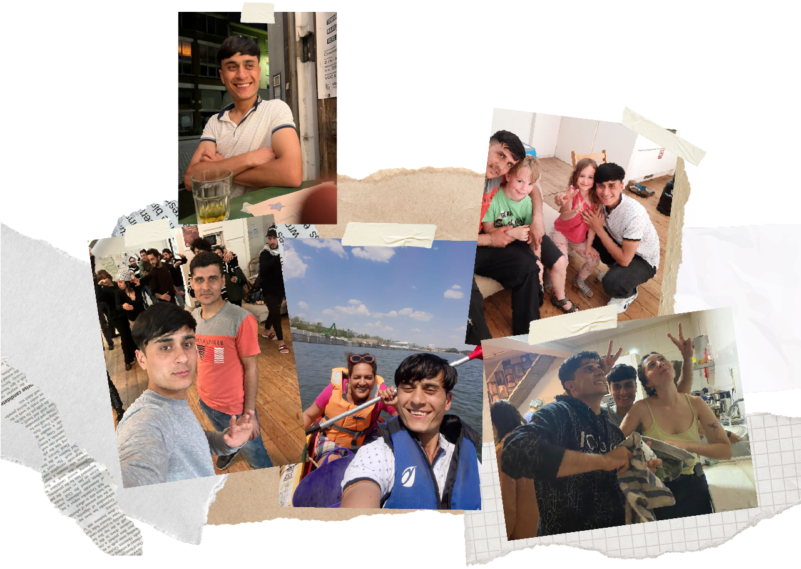
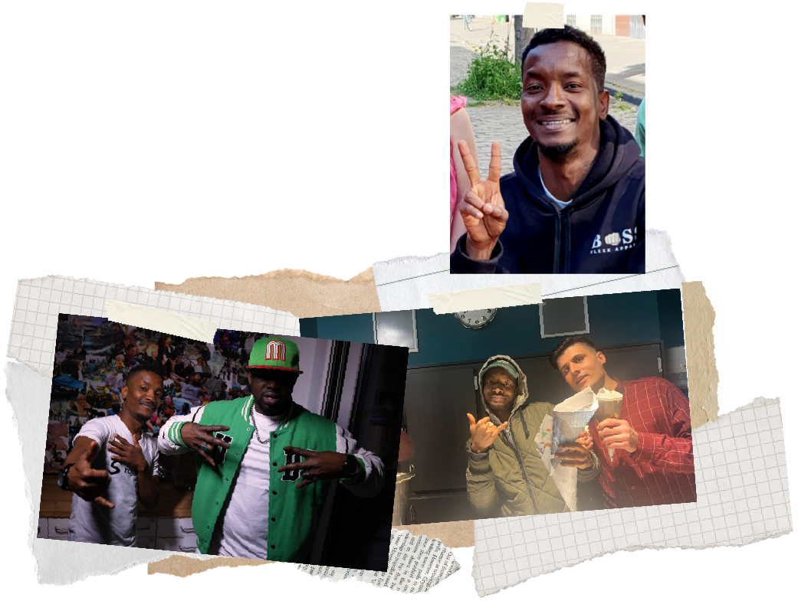

Khairullah
Khairullah est venu en tant que mineur, il est devenu un contact pour Sahel et parle maintenant le néerlandais.

Dialito
Je connais Cinemaximilian par l'intermédiaire d'un ami majdi, cela m'apporte beaucoup de nouvelles relations et de nouveaux amis. de nouveaux contacts et amis et aussi l'atmosphère dans cmx est très gentille ( comme une famille ) et les vibrations ensemble comme un seul est ce que j'aime le plus. Et cela m'apporte du plaisir et du bonheur avec la famille CInemaximiliaan.